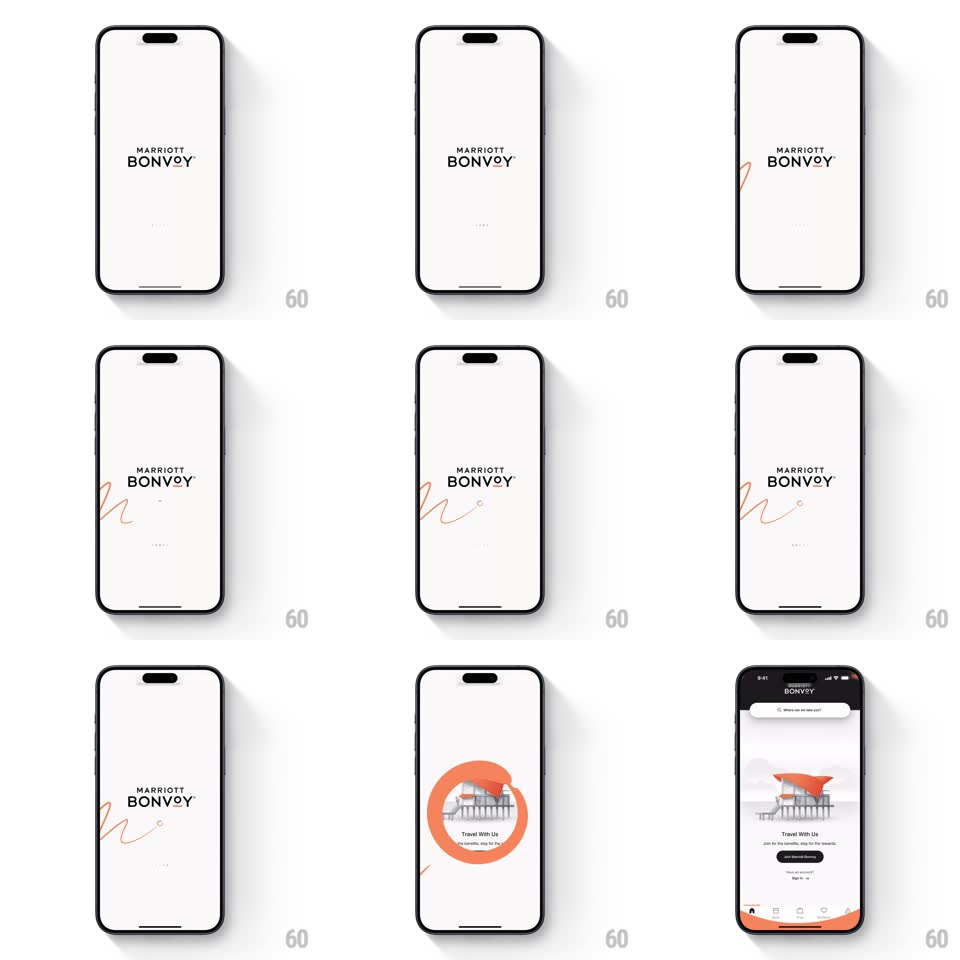

Media
Frame-by-frame

Rebuild this interaction 1:1: the Marriott Bonvoy splash - on off-white, a thin red line draws itself in an elegant continuous stroke around and through the MARRIOTT BONVOY wordmark, sweeping across the screen before the whole composition transitions into the coral-toned home screen.

Rebuild this interaction 1:1: the Marriott Bonvoy splash - on off-white, a thin red line draws itself in an elegant continuous stroke around and through the MARRIOTT BONVOY wordmark, sweeping across the screen before the whole composition transitions into the coral-toned home screen. ## Integration Integration: stack-agnostic spec - springs given as stiffness/damping, timed motions as duration + curve; map every value to your framework and animation library of choice. ## Scene Splash: cream/off-white screen, centered "MARRIOTT BONVOY" wordmark in black spaced capitals, faint tagline below. Home: coral/orange screen with a search pill, architectural illustration, "Travel With Us" card and membership actions. ## Motion spec Pattern: line-drawing brand animation into scene transition. - The wordmark is already set; a single red stroke begins off-screen left and draws across the screen in one continuous calligraphic path (stroke-dashoffset animation, ~1.8s, ease-in-out), looping around the wordmark's baseline and trailing off right with a small flourish dot. - The stroke has slight pressure variance - thicker mid-sweep, tapered ends. - The line then gathers into a circular loading mark below the wordmark (path morphs into a ring with a rotating arc, 500ms). - Transition: the ring expands and floods the screen with coral (scale 1 -> 20, 500ms ease-in), revealing the home screen beneath as the fill passes. ## Calibration - One stroke, one continuous draw - no breaks or restarts in the path. - The red is Marriott's warm brick red; the home flood is its coral - the hue shift happens inside the expanding ring. ## Reduced motion Wordmark and line fade in static (300ms); home screen crossfades. ## Don't miss - The line passes under the wordmark without touching it - near-miss spacing is the elegance. - The splash has generous empty space - the composition is top-third only.